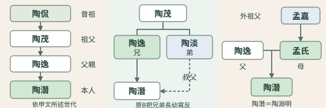
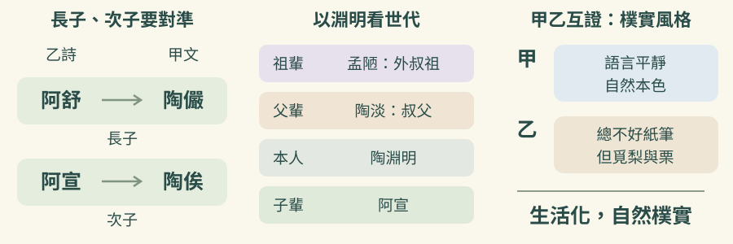
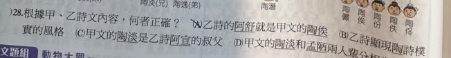

完整原題
作答所需文章／材料
【甲】 陶淵明約生於西元365年，為陶逸獨生子，二十歲左右喪父，家道中落。陶侃被認為是陶淵明的曾祖，因平定蘇峻之亂有功，成為東晉名臣，是當時最有權力的政治和軍事人物之一。祖父陶茂做過武昌太守，外祖父孟嘉出身南方士族，陶淵明的外叔祖，孟嘉的弟弟孟陋和叔父陶淡都是隱士。陶淵明有兒子五人，至少一個女兒。五個兒子依次名為陶儼、陶俟、陶份、陶佚、陶佟。五個兒子同父異母，三子和四子是雙生兒。 陶淵明詩歌現留存約120首，絕大部分是五言詩。風格方面，陶詩悠閒自得；語言方面，陶詩語言平靜。朱熹說：「陶淵明詩，人人皆說是平淡。」陶詩不假雕琢，找不到雕繪鍛鍊的痕跡，而是恰到好處，全是自然本色，天衣無縫。陳師道說：「淵明不為詩，寫其胸中之妙爾。」元好問稱讚陶詩「一語天然萬古新，豪華落盡見真淳」，讚美陶詩自然古茂，是詩人真實的情思意念，沒有虛偽和雕飾造作，本色真淳，毫無點染。 【乙】 白髮被兩鬢，肌膚不復實。雖有五男兒，總不好紙筆。 阿舒已二八，懶惰故無匹。阿宣行志學，而不愛文術。 雍、端年十三，不識六與七。通子垂九齡，但覓梨與栗。 天運苟如此，且進杯中物。 （陶潛〈責子詩〉）國文第27題｜陶淵明家族圖與兄弟長幼

國文第28題｜責子詩與親屬稱謂的對照
先想一想，再查看答案、解說與原圖
國文第27題｜陶淵明家族圖與兄弟長幼
分享原卷｜多文比較・第27題 · 對話建立日期（Created） 2026-07-26 · 原AI對話 ↗
逐項解析
| 選項與原句 | 判讀 | 句意與判斷理由 |
|---|---|---|
| (A) 陶侃（父）與某氏（母）所生二子：陶逸（兄）、陶淡（弟）。 | 不選 | 陶侃是陶淵明的曾祖，不能直接畫成其父陶逸的父親。 |
| (B) 陶茂（父）與某氏（母）所生二子：陶淡（兄）、陶逸（弟）。 | 不選 | 叔父是父親之弟；應為陶逸兄、陶淡弟，圖中反過來。 |
| (C) 陶逸（父）與孟氏（母）之子為陶潛。 | 應選 | 父陶逸、母孟氏、子陶潛，符合甲文關係。 |
| (D) 陶潛（父）與某氏（母）的同一親子線下列五子：陶儼、陶俟、陶份、陶佚、陶佟。 | 不選 | 甲文說同父異母，圖中卻以同一母親連到五子。 |
詳細說明與解題步驟
一、先用甲文建立世代與身分
甲文說陶淵明是陶逸的獨生子，祖父為陶茂，曾祖為陶侃，外祖父為孟嘉；陶潛即陶淵明。外祖父是母親的父親，所以圖中的母親孟氏與這條關係相符。
二、(A)把世代少畫一層
(A)把陶侃畫成陶逸、陶淡的父親。甲文卻說陶侃是陶淵明的曾祖，陶茂才是陶淵明的祖父，因此(A)的親子世代不符。
三、(B)錯在兄弟長幼，不能把錯誤原因說成不同父
甲文稱陶淡為陶淵明的「叔父」；叔父是父親的弟弟。因此陶逸應為兄、陶淡應為弟。
(B)卻把陶淡標為兄、陶逸標為弟，長幼顛倒，故不選。陶淡與陶逸同屬父輩，不能用「他們不是陶茂的兒子」當成(B)的錯誤理由；要依圖中實際的「兄／弟」判斷。
四、(C)符合題意
(C)父親陶逸、母親孟氏，下接陶潛，符合甲文說的陶逸獨生子與外祖孟嘉的關係，所以選(C)。
五、(D)忽略同父異母
(D)把五子畫在陶潛與同一位某氏的共同親子線下，會表示同一對父母所生；甲文卻說五子同父異母，所以不符。原文沒有交代各子究竟分屬哪一位母親，不能再自行指定母系分組。

① 陶侃到陶潛，世代不能少一層
依甲文，陶潛就是陶淵明：父親陶逸、祖父陶茂、曾祖陶侃。A卻把陶侃直接接成陶逸的父親，少了陶茂這一代。
② 叔父是父親的弟弟，B長幼寫反
甲文稱陶淡為陶淵明叔父，表示陶淡是陶逸的弟弟。應是陶逸兄、陶淡弟，B圖恰好反過來；錯在長幼，不是說兩人不同父。
③ 父陶逸、母孟氏、子陶潛，C符合
陶淵明是陶逸獨生子，外祖父為孟嘉；外祖父就是母親的父親。C將陶逸與孟氏接到陶潛，符合甲文的親屬關係。
④ 先排世代，再分叔父與同父異母
答案 C：陶逸與孟氏之子為陶潛
- A漏掉陶茂，父子世代不符。
- B兄弟反了：陶逸兄，陶淡弟。
- C符合父陶逸、母孟氏、子陶潛。
- D五子同父異母，不能全接同一母親。
核對註記：使用者已確認q-247目前內容OK；保留原題、答案C與B兄弟長幼相反的解說。
原圖（僅本題）


國文第28題｜責子詩與親屬稱謂的對照
分享原卷｜多文比較・第28題 · 對話建立日期（Created） 2026-07-26 · 原AI對話 ↗
逐項解析
| 選項與原句 | 判讀 | 句意與判斷理由 |
|---|---|---|
| (A) 乙詩的阿舒就是甲文的陶俟 | 不選 | 阿舒是長子陶儼；陶俟對應次子阿宣。 |
| (B) 乙詩顯現陶詩樸實的風格 | 應選 | 乙詩用日常的家事及平實語句抒情，吻合甲文對陶詩風格的描述。 |
| (C) 甲文的陶淡是乙詩阿宣的叔父 | 不選 | 陶淡是阿宣父親的叔父，對阿宣為叔祖輩。 |
| (D) 甲文的陶淡和孟陋兩人輩分相當 | 不選 | 陶淡是父輩，孟陋是外祖輩，差一個世代。 |
詳細說明與解題步驟
一、(A)把長子與次子混淆
乙詩先寫阿舒、再寫阿宣。對照甲文五子依次為陶儼、陶俟、陶份、陶佚、陶佟，可知阿舒對應長子陶儼，阿宣對應次子陶俟。故阿舒不是陶俟。
二、(B)可由甲、乙互相印證
甲文說陶詩語言平靜、不假雕琢、自然真淳；乙詩直接寫五子不愛紙筆、懶惰、不愛文術，以及幼子只找梨栗吃，語句貼近日常生活、情感自然，不依賴華麗辭藻，符合「樸實」的風格，所以選(B)。
三、(C)把叔祖說成叔父
陶淡是陶淵明的叔父；阿宣是陶淵明的兒子，所以陶淡對阿宣是叔祖（叔公）輩，並非叔父。辨稱謂時要先固定「以誰為中心」，不能把父子的親屬稱謂照搬。
四、(D)兩人差一個世代
孟陋是陶淵明外祖父孟嘉的弟弟，屬祖輩；陶淡是父親的弟弟，屬父輩，兩者輩分不相當。
補充讀詩
「二八」為十六歲；「行志學」為將近十五歲；「垂九齡」為將近九歲。末句以杯中酒自我排遣，與前面生活化、略帶幽默的描述連在一起，可看出自然真率的語氣。

① A 混淆長次子：阿舒不是陶俟
甲文五子依次為陶儼、陶俟等人；乙詩阿舒為長子，阿宣為次子。對照可知阿舒是陶儼，阿宣才是陶俟。不要只看名字相近，便把長子與次子的對應混在一起。
② C、D 辨世代：稱謂先固定以誰為中心
陶淡是陶淵明的叔父，但阿宣是淵明的兒子，對阿宣就應稱陶淡叔祖，不是叔父。孟陋是外祖父孟嘉的弟弟，對淵明屬祖輩；陶淡屬父輩，兩人差一個世代，故 C、D 不對。
③ B 由風格與詩句互相印證
甲文說陶詩語言平靜、自然本色；乙詩直寫孩子不愛紙筆、只找梨栗吃等家常事，語句平實，情感自然。這正能印證樸實的風格，不必靠華麗辭藻，故選 B。
④ 固定稱謂中心，甲乙互證樸實詩風
答案 B：乙詩顯現陶詩樸實的風格
- 阿舒＝長子陶儼；阿宣＝次子陶俟。
- 陶淡對阿宣是叔祖；孟陋與陶淡不同輩。
- 甲談自然本色，乙寫日常家事，內容與風格相合。
核對註記：已依原卷或完整文字核對並獨立解題；對應教材課次未確認，歸綜合。
原圖（僅本題）
